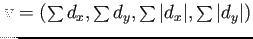
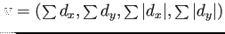

En esta última parte, se termina la creación del descriptor SURF.
El primer paso consiste en construir una región cuadrada de tamaño centrada en el punto de interés y orientada de acuerdo al resultado que se obtuvo en la sección 2.4.1. Ejemplos de esas regiones cuadradas son ilustradas en la Fig. 2.12.
Figura 2.12:
Detalle de una escena mostrando el tamaño de las ventanas orientadas del descriptor a diferentes escalas. (Figura tomada de (4)).
|
|
Figura:
Interpretación gráfica del descriptor SURF. (Figuras tomadas de (4)).
|
[]
[]
|
Figura 2.14:
Descriptores resultantes para tres subregiones con patrones diferentes (Figura tomada de (4)).
|
|
Seguidamente, cada región es dividida en subregiones de
como se puede observar en la grilla cuadrada orientada sobre el punto de interés en la Fig. 2.13a. Luego para cada subregión se calculan las respuestas de las waveletes Haar con una separación de muestreo de
. Las subdivisiones de
de cada cuadrado corresponden a los campos reales del descriptor que son las sumas , ,  y calculadas relativas a la orientación de la grilla como se observa en la Fig. 2.13b donde se denota con y a la respuesta de la wavelet Haar en la dirección horizontal y vertical respectivamente (relativas a la orientación del punto clave, con tamaño del filtro igual a ). Se debe tener en cuenta que para incrementar la robustez ante deformaciones geométricas y errores de localización, las respuestas y son primero ponderadas con un gaussiano con
centrado en el punto de interés. Luego, las respuestas y se suman en cada subregión, como asà también los valores absolutos de las mismas y con el objetivo de brindar información de la polaridad sobre los cambios de intensidad. De esta forma, cada subregión queda representada por un vector de 4 dimensiones
, que caracteriza su intensidad localmente
y calculadas relativas a la orientación de la grilla como se observa en la Fig. 2.13b donde se denota con y a la respuesta de la wavelet Haar en la dirección horizontal y vertical respectivamente (relativas a la orientación del punto clave, con tamaño del filtro igual a ). Se debe tener en cuenta que para incrementar la robustez ante deformaciones geométricas y errores de localización, las respuestas y son primero ponderadas con un gaussiano con
centrado en el punto de interés. Luego, las respuestas y se suman en cada subregión, como asà también los valores absolutos de las mismas y con el objetivo de brindar información de la polaridad sobre los cambios de intensidad. De esta forma, cada subregión queda representada por un vector de 4 dimensiones
, que caracteriza su intensidad localmente
 . Debido a que se tienen  subregiones (
) con vectores de 4 dimensiones por subregión, se obtiene un vector descriptor de 64 dimensiones (
) por cada punto clave detectado, por lo que se puede decir que el descriptor SURF consiste en las respuestas de la wavelet Haar en una región de 4x4 alrededor del punto clave (). Las repuestas wavelet son invariantes a un sesgo en la iluminación, mientras que la invarianza al contraste es alcanzado mediante la normalización del descriptor.
. Debido a que se tienen  subregiones (
) con vectores de 4 dimensiones por subregión, se obtiene un vector descriptor de 64 dimensiones (
) por cada punto clave detectado, por lo que se puede decir que el descriptor SURF consiste en las respuestas de la wavelet Haar en una región de 4x4 alrededor del punto clave (). Las repuestas wavelet son invariantes a un sesgo en la iluminación, mientras que la invarianza al contraste es alcanzado mediante la normalización del descriptor.
En la Fig. 2.14 se pueden observar los descriptores para tres subregiones con patrones de imágenes diferentes. En el caso de una región homogénea se puede observar que todos los valores son relativamente bajos; en presencia de frecuencias en la dirección de , los valores de
son altos, mientras los otros son bajos y si la intensidad se incrementa gradualmente en la dirección , ambos valores y
son altos.
Si bien existen muchos parámetros del método que pueden variarse, en este capÃtulo se han expuestos aquellos que el autor (4) recomienda según sus resultados en la publicación original.
christian
2014-01-31